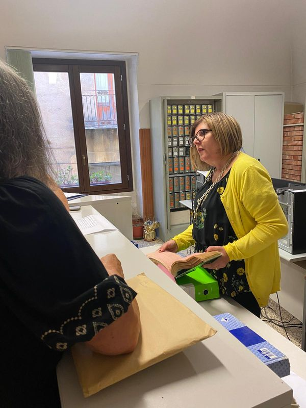
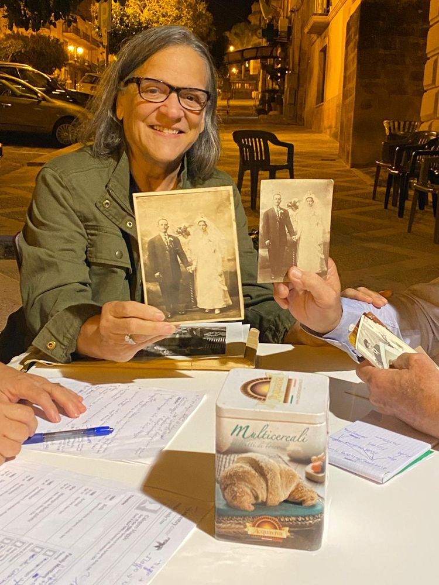
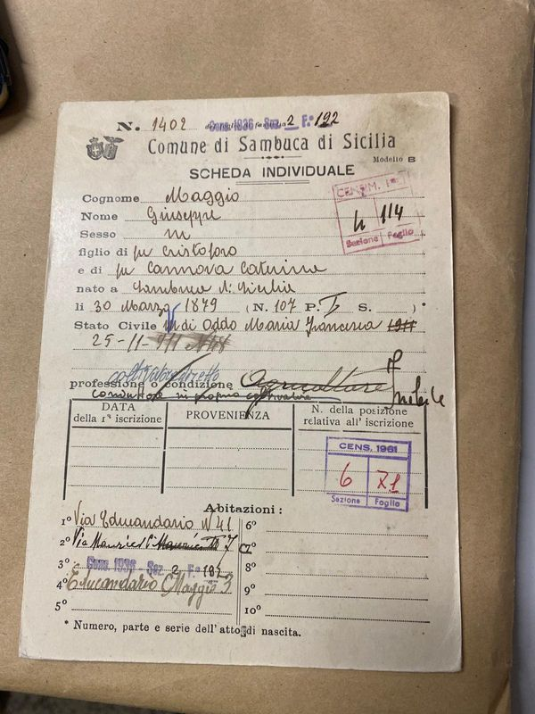
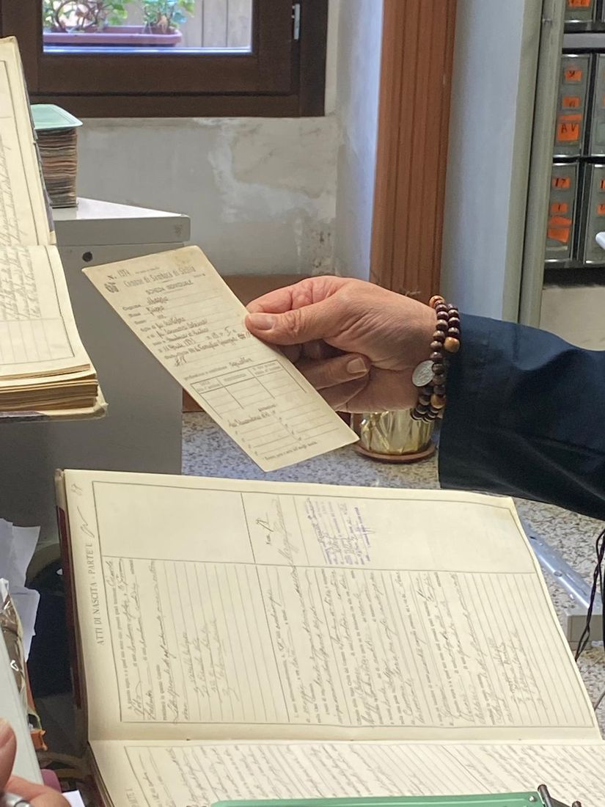
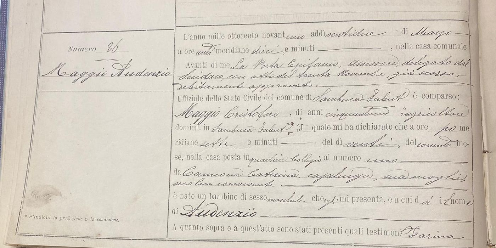
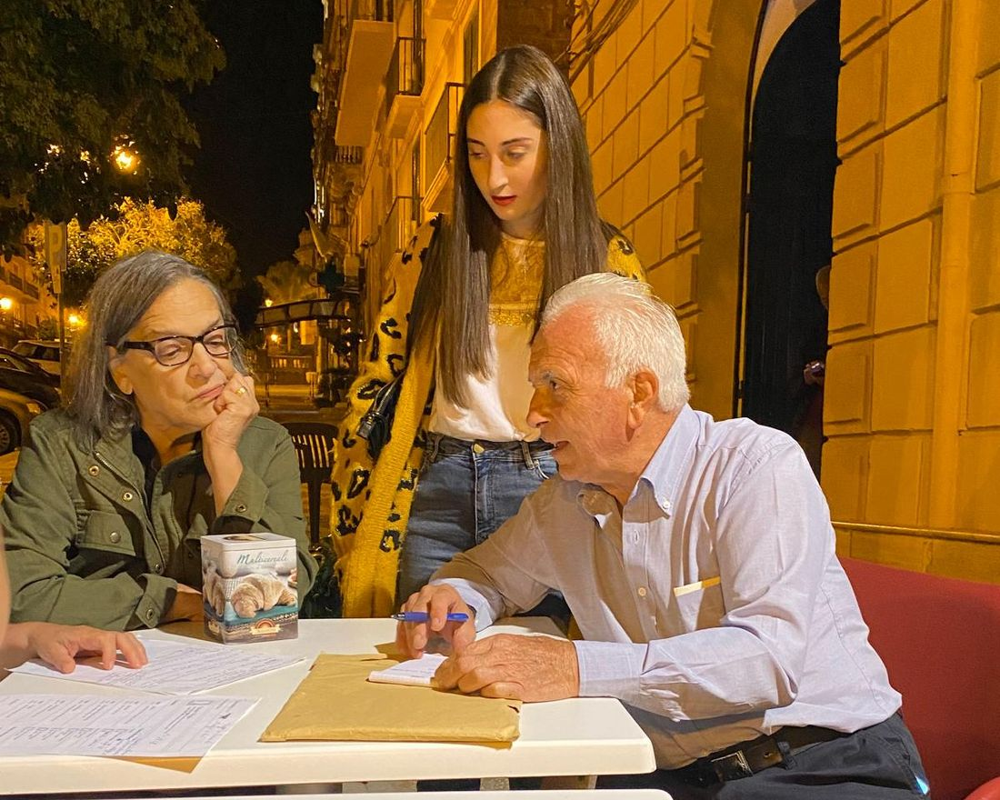
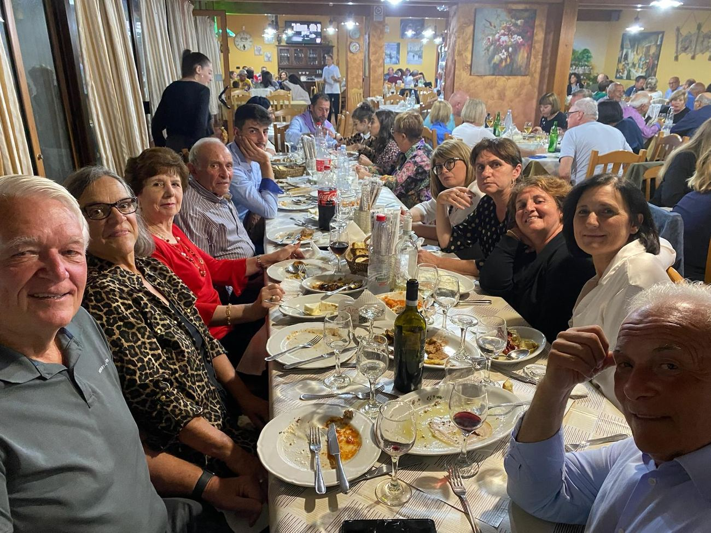
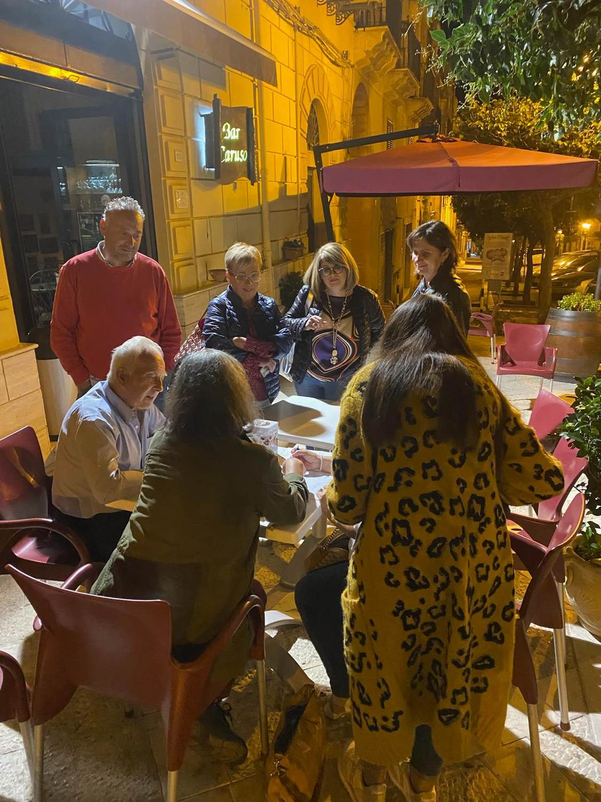

“Through her skills and efforts I have a deeper appreciation of my heritage and a family I never knew I had.”
The Experience
From your kitchen table to the village square.
A heritage journey takes time — typically two to six months from the first email to the actual visit. Here is exactly what happens at each step, so you know what to expect.



The moment they realized they shared the same memories.
You request a quote
Through our interactive configurator you tell us which package you want, the add-ons you'd like, and a little about your family. Within 48 hours you receive a personalised written quote — no fixed price lists, no surprises.
We have a real conversation
Before any money changes hands, we have a free, no-obligation call (in English). Rita reviews your family tree with you, explains what's likely to be findable and what isn't, and aligns expectations. If we're not the right fit, we'll tell you honestly.

Atti di nascita, parte prima. Somebody’s beginning, in someone else’s handwriting.
Rita verifies your tree
Rita travels to the relevant Italian municipalities and parishes. She reads the original records — often by hand, often in archaic Italian or Latin — and verifies each branch. You receive a structured report with what was confirmed, what wasn't, and why.
Living relatives — discreetly
If Rita finds descendants of your family still living in Italy, she reaches out gently. She explains the situation, shares what you have asked her to share, and waits for them to decide. You are introduced only if they agree. Some families say yes; some prefer privacy. Both answers are respected, always.

Who your ancestors really are.
We design your itinerary
If you have chosen the Full Heritage Journey, this is where we plan the visit together: which villages, how many days, which regions, what add-ons (food & wine experiences anywhere in Italy, copies of certified documents, etc.). You stay in charge of the pace.
You arrive in Italy
Rita meets you at your hotel or at the train station — whichever you prefer. She has already coordinated with the priests, the mayors, the relatives. From this moment on you are not a tourist; you are a family member coming back.

First meeting — real cousins getting to know each other.
The walk & the meeting
Together you visit the ancestral village. You see the house, the church where they were baptised, the cemetery if they're buried there. When the Italian side has agreed, you meet your relatives — Rita translates every word, every joke, every tear.
And then
Finally with your famiglia.


What it feels like
It is not just a vacation. It is a return.
You will laugh, often. You will probably cry, at least once. You will eat food cooked by people who share your last name and who learned the recipe from someone whose name you carry. You will stand in a square where your great-grandmother played as a child.
Most people tell us, afterwards, that they didn't know what they were missing — until they found it.
The families
They were sitting where you are now.
Four families, four American states, one country they had only heard about.
“My father had the chance to meet some first cousins and an aunt still alive, fulfilling the dream of his life.”
“She has endless positive energy, a great sense of humour, has never met a stranger. She is your ticket to a trip of a lifetime.”
“By the end of our time together, she felt like family. We feel incredibly fortunate to have met her.”
Frequently asked
Good questions, honest answers
Do I really need to have a family tree?
We strongly recommend it. The research is faster, deeper and less expensive when we start from a clear tree. That said, if you don't have one yet, we can suggest you to start one on FamilySearch.org, which is free. See where to begin.
Can I be there when the records are found?
Yes, if you choose the Full Heritage Journey. In the Research Package Rita works the archives on her own and sends you the report; on the Journey you can join her in the research — walk into the town hall with her, watch the register come off the shelf, and read your ancestor's own act of birth on the page where it was written.
Why are there no prices on the site?
Because no two families are the same. The number of villages we have to visit, the size of your tree, the add-ons you choose, the length of the trip — these can vary enormously. We write each quote by hand so it reflects what you actually want.
What if my relatives don't want to meet me?
We respect their decision absolutely. You will still receive the full research dossier — the village, the records, the photographs of where they live. Sometimes families ask for time and reach out months later. We have seen that happen many times.
Who drives during the trip?
Whatever you prefer. Rita can drive your rental car — fuel reimbursed at cost. Or you can drive and she rides along as assistant and translator. If she drives, she goes on the rental agreement as a named driver — as the main driver, or alongside you. Without that, the rental company's insurance would not cover a claim. It is a standard box on the contract, and we sort it out before you land — the details are here.
Take the first step.
It costs nothing to ask. Use the configurator and get your personalised quote within two days.
Request my quote →